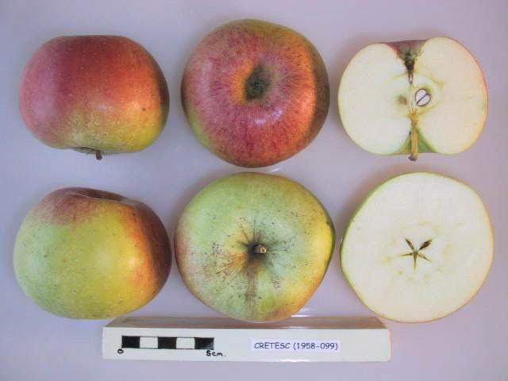
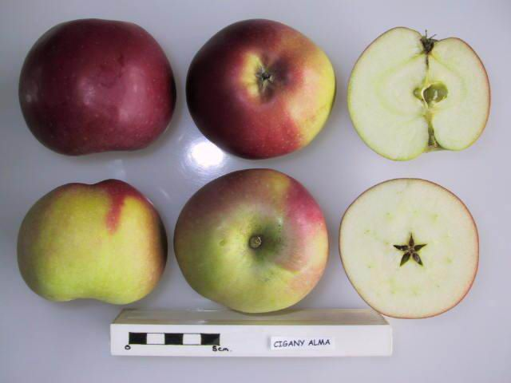

titlu
bla It works like this:
| Imagine | Nume Soi | Anul Omologării | Origine |
|---|---|---|---|
|  | Cretesc | pre 1800 | România |
| Domnesc | 1860 | România | |
| Poinic | 1800 | România | |
| Patul | 1800 | România | |
| Sovari Comun | 1800 | România | |
| Sovari Nobil | 1800 | România | |
 |
Delicios de Voinești | 1800 | România |
 |
Frumos de Voinești | 1800 | România |
 |
Generos de Voinești | 1800 | România |
| Renet Ananas | 1800 | România | |
| Renet de Canada | 1800 | România | |
| Astrahan Roșu | 1800 | România | |
| Stetin Roșu | 1800 | România | |
| Ardelean | 1800 | România | |
| Clar Alb | 1800 | România | |
.jpg) |
Belle Fleur | 1800 | România |
,_National_Fruit_Collection_(acc._1973-169).jpg) |
Frumos de Boskoop | 1800 | România |
.jpg) |
Gustav | 1800 | România |
 |
Calvil Roșu de Toamnă | 1800 | România |
.jpg) |
Calvil Roșu de Iarna | 1800 | România |
 |
Aura | 9/11/2001 | România |
 |
Strugurel (Trauben) | 1992 | România |
| Florina | 1992 | România | |
| Parmen Auriu | 1992 | România | |
| Landsberger Reinette | 1992 | România | |
| London Pippin | 1992 | România | |
| Trotuse | 1800 | România | |
| Tare de Ghinda | 1992 | România | |
| Rosioare Calugaresti | 1992 | România | |
| Popesc | 1992 | România | |
 |
Nobil de Geoagiu | 1992 | România |
| Moti | 1992 | România | |
| Fara Nume | 1992 | România | |
| Cretesc de Breaza | 1992 | România | |
| Craciunesti | 1992 | România | |
| Șiculane | 1992 | România | |
| Nemțesc cu Miezul Roșu | 1992 | România | |
| Cormoș | 1992 | România | |
|  | Țigănesc | 1800 | România |
| Piros | 1800 | România | |
.jpg
) |
Domicele | 1800 | România |
| Alex | 1992 | România | |
| Ciprian | 1/20/2008 | România | |
| Redix | 9/17/1862 | pif | |
 |
Auriu de Bistrița | 8/6/1945 | bed |
 |
Romus 1 | 7/4/1776 | România |